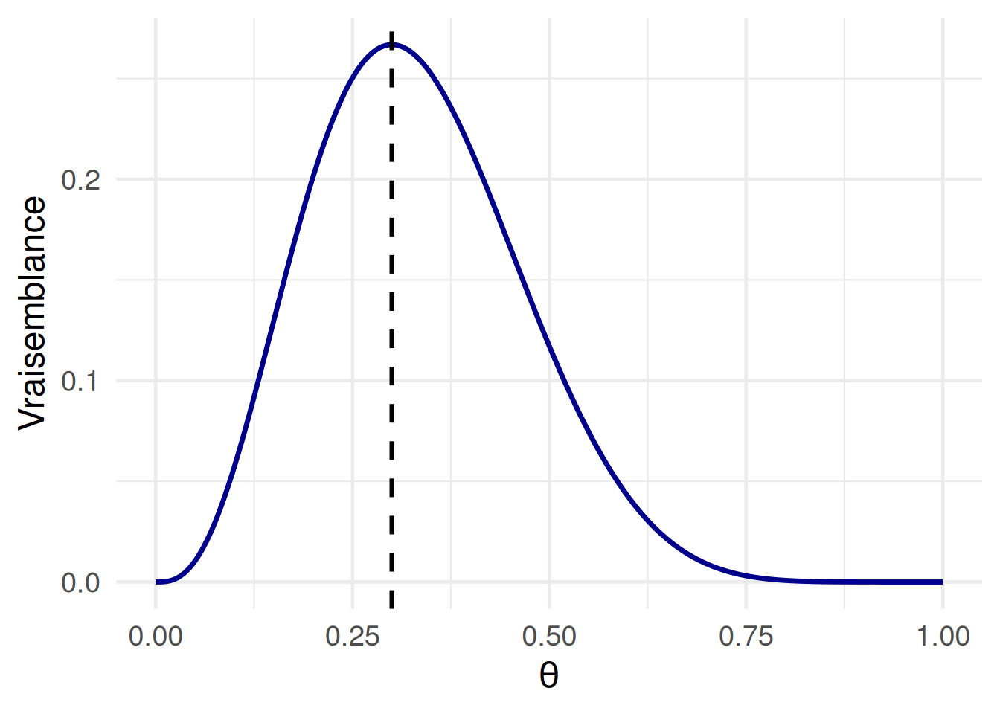

# Installation des packages, à faire une seule fois
# install.packages("ggplot2")
# Chargement des packages
library(ggplot2)Vraisemblance
Quelques aspects techniques avant de commencer
Il est très important de faire tourner la section ci-dessous, même si d’un point de vue pratique elle ne fait que préparer les instruments dont nous allons nous servir plus tard dans le document.
La vraisemblance est le moteur commun au cœur de l’approche fréquentiste et bayésienne.
Comme nous l’avons déjà mentionné dans le chapitre précédant, pour comprendre la vraisemblance, il faut partir de l’idée de base que nous avons un modèle avec des paramètres. Un modèle est une description formelle de comment l’on pense que les données fonctionnent. Par exemple, nous pouvons supposer que la taille des adultes suit une loi normale. Le modèle de la loi normale peut varier selons deux paramètres : la moyenne (\(\mu\)) et l’écart-type (\(\sigma\)). L’objectif du calcul de la vraisemblance est de trouver les valeurs des paramètres qui font en sorte que notre modèle represente au mieux les données observées.
La vraisemblance quantifie l’adéquation du modèle aux données, elle exprime à quel point les données sont probables étant donné notre modèle ou notre hypothèse : \(P(D|\theta)\). Si on réprend notre exemple de la taille des adultes, nous pouvons dire que nous avons fixé un modèle (i.e., une loi normale) et nous cherchons à estimer les paramètres (e.g., moyenne = 160 cm, écart-type = 8 cm), afin de trouver les paramètres de la distribution normale qui augmentent la vraisemblances d’observer les données que nous avons recoltées.
Plus formellement, nous pouvons conceptualiser la vraisemblance comme une fonction qui prend comme input le modèle et les paramètres et donne comme output une valeur qui exprime à quel point ces paramètres expliquent bien les données. Dans notre exemple, la fonction de vraisemblance pour un modèle avec paramètres \(\mu\) et \(\sigma\) est donnée par :
\[ Lik(\mu, \sigma) = \prod_{i=1}^{n} f(x_i \mid \mu, \sigma) \]
où :
\(f\) est la fonction de densité (dans notre cas, cela sera une loi normale) pour l’observation \(x_i\) étant donné les paramètres \(\mu\) et \(\sigma\)
$ $ signifie que l’on multiplie toutes les densités pour chaque observation \(i\) allant de \(1\) à \(n\)
L’échelle de la vraisemblance ne représente donc pas des probabilités ou des densités de probabilité, elle nous aide simplement à trouver le meilleur paramètre qui permet à un certain modèle de mieux s’ajuster aux données que nous observons.
Exemple avec la binomiale
Nous pouvons nous référer à notre exemple du traitement pour des troubles d’addiction aux substance, dans lequel nous mesurons la rechute à 6 mois après le traitement.
Nous avons 10 personnes ayant suivi le traitement et 3 de ces personnes ont eu une rechute à 6 mois.
Dans ce cas, nous avons :
- les données observées \(x = 3\), \(n = 10\)
- un modèle \(Binomiale\)
Nous cherchons à estimer le paramètre de probabilité de rechute \(\theta\) qui maximise la vraisemblance de nos données observées. Ce processus est l’estimation de la vraisemblance maximale (Maximum Liklihood Estimation; MLE).
Nous pouvons l’implémenter de différentes manières.
1. Par essais et erreurs
Nous allons utiliser notre fonction dbinom et calculer la probabilité des nos données avec différentes valeurs du paramètre \(\theta\), comme par exemple \(\theta = 0.1\) :
dbinom(x = 3, size = 10, prob = 0.1)[1] 0.05739563ou $ = 0.3$ :
dbinom(x = 3, size = 10, prob = 0.3)[1] 0.2668279ou encore \(\theta = 0.9\) :
dbinom(x = 3, size = 10, prob = 0.9)[1] 8.748e-062. Avec un exploration systématique de toutes les valeurs possible du paramètre
Nous pouvons écrire un fonction pour ce set de données, dans laquelle on rentre en input la valeur du paramètre \(\theta\) et nous obtenons en output la vraisemblance. Le code ci-dessous déclare la fonction :
lik.fun <- function(parameter) {
ll <- dbinom(x = 3, size = 10, prob = parameter)
return(ll)
}Nous pouvons ensuite utiliser cette fonction pour faire un recherche systématique du paramètre qui maximise la vraisemblance de nos données étant donné notre modèle.
Pour faire cela, nous allons créer un vecteur contenant toutes les valeurs possibles de notre paramètre \(\theta\) entre 0 et 1 avec des intervalles de 0.001 :
# Séquence des valeurs possibles du paramètre
p_seq <- seq(0, 1, by = 0.001)Ensuite, nous allons appliquer notre fonction pour calculer la vraisemblance de toutes ces valeurs possibles :
# Calcul de la vraisemblance pour chaque valeur
lik_values <- sapply(p_seq, lik.fun)Ensuite, nous pouvons créer un représentation graphique de la vraisemblance en fonction de chaque valeur possible du paramètre :
# Mettre le tout dans une dataframe
df <- data.frame(prob = p_seq, likelihood = lik_values)
# Faire le graphique
ggplot(df, aes(x = prob, y = likelihood)) +
geom_line(color = "darkblue", linewidth = 1.2) +
geom_vline(xintercept = 3/10, linetype = "dashed", color = "black", linewidth = 1.1) +
labs(
x = expression(theta),
y = "Vraisemblance"
) +
theme_minimal(base_size = 18)
La valeur maximale de la vraisemblance de nos données est obtenue avec un paramètre de probabilité de rechute \(\theta = 0.3\).
3. Utilisation d’algorithmes d’optimisation
Même si cette approche systèmatique marche très bien dans notre cas, elle est rarement applicable dans des modèles plus complexes, ou par exemple avec plusieurs combinaisons de paramètres à estimer.
Dans la plupart des cas d’estimation de la vraisemblance, nous faisons appel à des algorithmes d’optimisation en combinaison avec la fonction que nous avons créée auparavent et qui contient notre modèle dbinom avec nos donnée \(x=3\) et \(n=10\).
L’algorithme d’optimisation va nous rendre la valeur du paramètre \(\theta\) qui maximise la vraisemblance $maximum et la vraisemblance maximale $objective.
optimize(lik.fun, c(0, 1), maximum = TRUE)$maximum
[1] 0.3000157
$objective
[1] 0.2668279